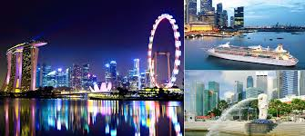
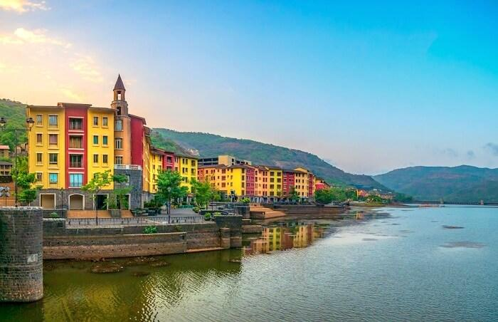

THE FIRST
Explore this Travel Blog!!
This blog is basically for posting blog posts about my first ever trip.
I post about my first ever national or International trip.
It can also be about my first trip with my friends, or just family or my first trip with anyone to any place. I talk about
how each of these kind of first trips experience felt with my friends or families.
My first trip abroad: Singapore And Malaysia
I went to Singapore and Malaysia when I was in 2nd grade. It was long back when the Universal studios still didn't come up there.
In singapore, I had my first cruise experience, but since I was a kid back then , I didn't get to fully utilize the facilties they've got on the ship
The ship had various activities and varieties of sea food on board. There's one more unforgettable memory I had there... I got lost in a singapore mall
while searching for a doll which I've liked..but thankfully I was found by my parents again!!

To know more about Singapore and Malyasia..CLICK HERE
My first trip with a friend:Lavasa City
This was the first trip I went with friend, Riya, but it was not just her and me. Our families decide to come along with us too. Lavasa city was a artificial city built near Mumbai
.It is quite famous for its scenic views and it's water sports.This is where I first learnt kayaking. I went on water bike ride for the first time,it wa sthrilling and scary at the same time.
But, I couldn't explore many other water activities because i didn't how to swim.But I was happy to learn whatever I got to do. I would love to go there again sometime.That next time, I wish I would go
there with just my friends.

To know more about Lavasa City..CLICK HERE
DAYS SPENT AT EVERY TRIP
| PLACE |
#DAYS |
| SINGAPORE |
3 DAYS |
| MALAYSIA |
3 DAYS |
| LAVASA |
2 DAYS |
SEND YOUR FEEDBACK!!
NOTE:you can also share or have your experiences posted here !!ANYONE INTERESTED CAN EMAIL ME AT: blogposts123@gmail.com